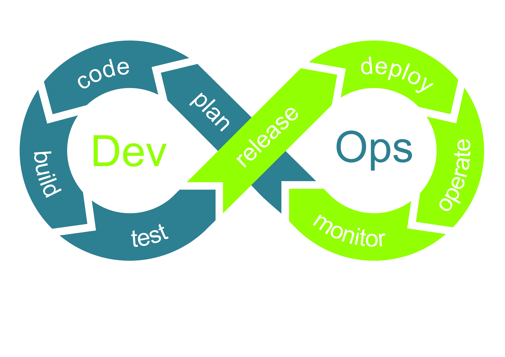
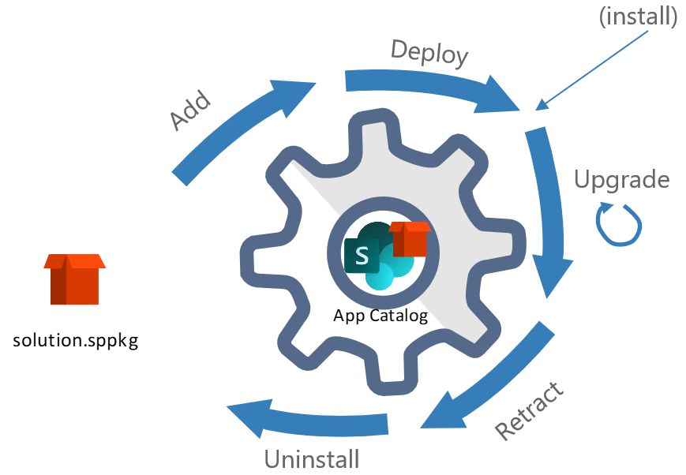
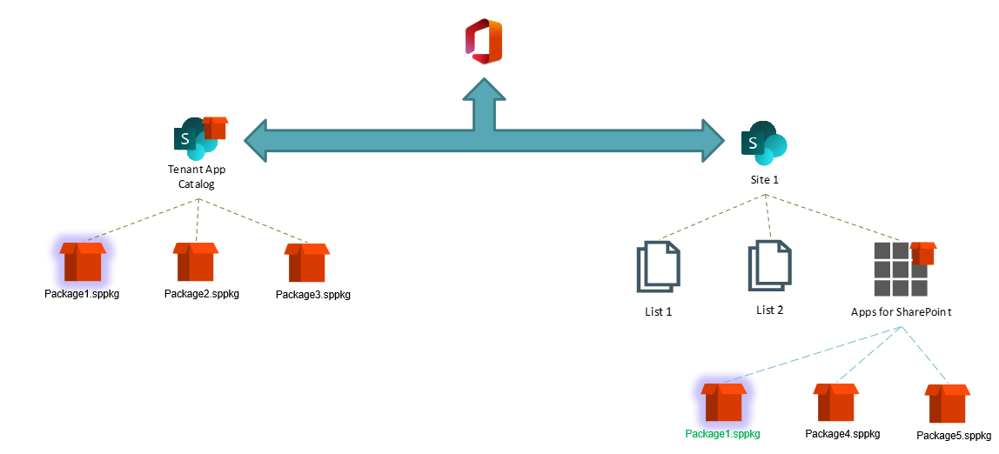

Apply a DevOps process to your SPFx project (Part 1)
Use Case
You're working on a daily basis with SharePoint Framework solutions in a business context. You want to make improvments on existing components and testing them without impacting users in production environment.
Goal of this article
This article will show how to apply a DevOps process by using tools like Azure DevOps or GitHub Actions, using multi-stage pipelines to deploy on environments such as UAT, in order to validate an improvment or a hotfix before going to production.
The first part will describe the DevOps philosophy, how can it fit in SharePoint Online context and which project does it work with.
The DevOps movment
Back in 2009, it was first described by Patrick Debois as a way of teaming up the developers (build) and the system administrators / operators (run), to unify their work and put some trust on each other.
One of the bests depictions of the movment is this world famous schema:

According to Microsoft:
DevOps is the union of people, process, and technology to continually provide value to customers.
As SharePoint Online developers, we know how confortable it is to have all the power permissions when working on SPFx solutions. But we also know that in a business context, this could not be tolerated by the IT department, as they're the "gatekeepers" of the production environment.
SharePoint Online ALM
When working on SharePoint Framework solutions, you're crossing through several steps which describe the application lifecycle:
- Testing "locally" (as the code is on your machine even if you're testing on a remote workbench / page)
- Build / shipping the solution as a package
- Adding the solution to an app catalog
- Deploying it
- Installing it on a tenant or a site
- (optional) Upgrading it
- Retracting it
- Uninstalling it

When your package is shipped for deployment, SharePoint Online has two ways of storing your apps:
- Tenant app catalog
- Site collection app catalog
Tenant App Catalog
The first one has to be added if it doesn't exist, because it's not created by default on your tenant. With SharePoint Administrator permissions:
- Open the tenant admin apps page: https://contoso-admin.sharepoint.com/_layouts/15/online/TenantAdminApps.aspx (replace
contosoby your tenant name) - Click on "App Catalog", then setup the URL and validate the app catalog creation
Once the tenant app catalog is created, you have to be site collection administrator to add and deploy packages.
From there, you can deploy following components, that can be automatically deployed on all the tenant:
- SharePoint Online WebPart
- SharePoint Online Extensions
- SharePoint Online Library Components
- SharePoint Online Adaptive Card Extensions (ACEs)
- Microsoft Teams WebPart
Site Collection App Catalog
The second one will really be useful for the next part of the article series, because it can be enabled optionally for each existing site collection.
Unlike the tenant app catalog, the site collection app catalog can only be created through Microsoft or PnP tools such as SharePoint Online Management Shell, PnP PowerShell or CLI for Microsoft 365:
1 2 3 4 5 | |
1 2 3 4 5 6 7 | |
1 2 3 4 5 | |
Important
To enable the site collection app catalog, you must be at least SharePoint Administrator, be tenant app catalog site collection administrator and be the targeted site collection administrator
Once enabled, like the tenant app catalog you have to be site collection administrator to add and deploy packages.
As the tenant app catalog, you can deploy components on the site collection tenant but not all of them:
- SharePoint Online WebPart
- SharePoint Online Extensions
- SharePoint Online Library Components
- SharePoint Online ACEs
- Beware that for this component, you'll only be able to test it on the hosted workbench, not a "Dashboard" page, as this one is only available on the "home site"
You can't deploy Microsoft Teams WebParts, as you have to deploy them at the tenant level in order to synchronize the solution package with Teams.
Priority order
The most interesting part when deploying SPFx solutions is the priority order.
Let's take a simple example. You're developing a WebPart and ship it as a solution package. You can deploy it on both tenant app catalog and site collection app catalog.
When a same component is deployed on both catalogs, it's the site collection one which prevails.

Keep that is mind because it will be very useful for the second part 😉
Useful Links
(Thanks to Philippe M for providing his DevOps schema template)